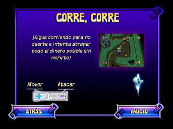
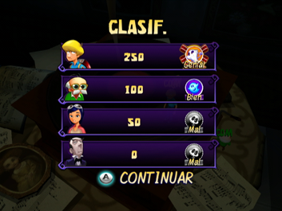

18 |
Modo Minijuegos |
 |
En este modo, puedes jugar cualquiera de los minijuegos desbloqueados (hasta 10) en el nivel de dificultad que quieras: fácil, medio y difícil. Y como en el modo Aventura, puede haber hasta 4 jugadores reales, con jugadores COM en el puesto de los personajes que no estén asignados. ¡Así que solo tienes que elegir un personaje y el minijuego al que quieres jugar! Pantalla Minijuegos En esta pantalla puedes seleccionar el minijuego y el nivel de dificultad en el que quieres jugar. Pantalla Cómo jugar  Esta pantalla explica cómo jugar al minijuego que hayas seleccionado. Muestra el texto de ayuda, los controles y una imagen. Esta pantalla aparece antes de que empiece el minijuego. Pantalla Clasificación (Clasif.)  Esta pantalla muestra la puntuación y la clasificación de cada jugador en el minijuego una vez terminado. Cada jugador recibe una evaluación (‘Bien’, ‘Mal’ o ‘Genial’) en función de cómo lo haya hecho en el minijuego. |
 |
 |
 |